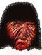

Saturday, October the 2nd, 2004
back to: title, date or indexes
Examining the photograph of a helmeted hornbill (Rhinoplax vigil) that appeared on these pages on 27th September, reader Sam Byrne was struck by the fact that its neck looks like half a human face—and a singularly unpleasant one at that. Sam extrapolated from the scraggy bird's neck the portrait below, which he has sent in with the hope that someone may recognise this visionary figure. Sam's claim that he was in a hypnagogic trance and communing with the spirit world while creating the picture is probably nonsense. I have asked him to provide a sample of ectoplasm, but he has not yet complied, despite a barrage of threatening letters and a visit from one of the Hooting Yard Tsar's evil henchmen.
